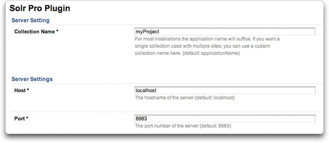
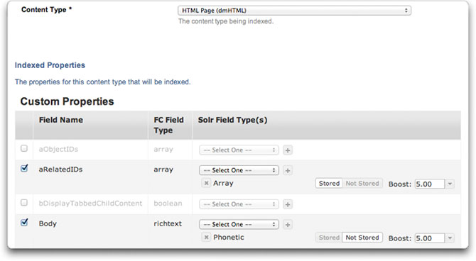

Download and install in minutes. Out of the box, the plugin is ready to go. But we didn't stop there. You can tweak and enhance Solr to your heart's content.
Get the latest release as well as archived versions in the download area.
The plugin repository can be found in github.
git clone git://github.com/jeffcoughlin/farcrysolrpro.git
To install, copy the plugin files to /farcry/plugins/farcrysolrpro and add "farcrysolrpro" to your "this.plugins" setting in your FarCry constructor. Deploy the content types in the COAPI manager and restart the application.
You will need a copy of Solr 3.5.x. One is provided in the git repository or optionally as part of the plugin distro. Solr does not have to run from within the plugin folders. By default our git repository has a copy of Solr under /farcrysolrpro/packages/custom/cfsolrlib/solr-server for convenience and because it was just easier for us to manage the files this way and offer a complete packaged solution. However Solr can be run from anywhere (on the same server or remotely with a couple restrictions - see Running Solr below) and you are not required to use the version of Solr we provide as a convenience (Solr is a pretty large download, so feel free to grab it elsewhere if desired). The downloads page lists the version of Solr that has been tested with each corresponding plugin version. Using a different version of Solr with the plugin is at your own risk. If you choose to run Solr from a different location, make sure to note that in your webtop config for the plugin (and be aware of the possible speed implications that can happen from running Solr on a separate machine).
For this plugin, Solr is required to run in multicore mode. We chose this requirement because it allows people to use the same solr installation for multiple FarCry projects (each project having their own collection). It also allows us to use Solr's reload command when changes are made to most configuration areas without the need to restart Solr.
There are examples in the /solr-server/README.txt folder on how to execute Solr in multicore mode. At the time of writing this documentation, the example they give (which you run from the /solr-server/ folder) is:
java -Dsolr.solr.home=multicore -jar start.jar
To configure min/max RAM, add the -Xms and-Xmx switches.
java -Dsolr.solr.home=multicore -Xms256M -Xmx512M -jar start.jar
See performance tips below for some suggestions on RAM configuration.
Sample startup scripts have been provided with the plugin and can be found in the /solr-server/ folder (assuming you've downloaded our copy of Solr server). You can adjust the min/max memory as variables at the top of the script(s).
For Windows users, there are start.bat and stop.bat files.
For *nix/Mac users there is a bash script called solr (example: solr (start|stop|restart). Default is start).
We've found that running Solr as sudo gives undesirable ownership results. We suggest just running Solr normally.
Solr can run from any server as long as CF has HTTP access to it. By default the plugin will assume you are running it on the same box as CF (and for most people this will work just fine). To configure where the plugin can find your Solr server, see the plugin config (the plugin config is discussed below).
Please keep in mind that if you plan to run Solr on a separate box, there is a possibility of it appearing slow if you have any network/bottleneck issues or network lag. This is because a lot of data is being sent over HTTP. One advantage we have over Solr's normal interaction with file parsing is that we interact with Tika directly from ColdFusion, so we don't ahve to send a huge binary file to Solr - which then sends the data to Tika. So this helps tremendously with network speed issues if you plan to run Solr on a separate box. But if you notice that your searches and indexes appear to be slow, consider the network speed and maybe verify it by testing/running Solr on the same box to see if the performance improves.
We have optionally provided a copy of Solr server with our plugin. You do not need to use our copy in order to use this plugin. However, if you choose to run your own copy you'll need to make the following changes in your solr.xml file (see example code to the right):
We have not tried using this plugin with Solr on another box (we haven't had the need yet). If you've had success (or failure) with running Solr on another box in conjunction with this plugin, let us know.
<?xml version="1.0" encoding="UTF-8" ?> <solr persistent="true"> <cores adminPath="/admin/cores"> </cores> </solr>
Setting up a program to run as a service for different operating systems is a bit beyond these instructions, but it's not difficult to do for those who are not familiar.
So as not to leave you completely on your own, here are some suggestions:
Once you've completed the above steps, you'll need to login as an admin and configure the plugin in the webtop.Webtop --> Admin --> Configuration --> Edit Config --> Solr Pro Plugin
When you save the config, one of the things it will do is copy over the necessary template files from the /farcrysolrpro/templates/ folder to your [project]/solr/ folder (it will create solr the folder if needed). Don't worry, if the files already exist, it will not overwrite them.
Each configurable item in the form has a hint that helps explain it, so I wont repeat them here. However, I'll point out that most people will likely run fine with all the default settings.
Running the config at least once (even if not changing any settings) is required.

A web mapping is required for several of the ajax functions and css/js we use in the webtop (configured in your webserver: Apache/IIS). We also provide sample styling for your search pages (should you choose to use our sample webskins) which refer to the web mapping. This web mapping needs to point to the plugin's www folder (ie. /farcry/plugins/farcrysolrpro/www).
We advise using /farcrysolrpro (default) as the web mapping, however if you wish to use something else, make sure to update the plugin config and tell it what the web mapping is.
If you are not able to create a web mapping you can instead create a folder in your project's webroot (ie. [project]/www/farcrysolrpro and copy the files from the plugin's /farcrysolrpro/www folder into it.
You need to setup your collections in order for them to get indexed.
Webtop --> Admin --> Solr Pro (dropdown) --> Setup --> Content Types

There is more detailed information at the bottom of the edit form (scroll to the bottom of the form when creating/editing a content type).
Below is a simple example of setting up an HTML page here. For detailed information on all your options, scroll to the bottom of the edit form when creating/editing a content type for Solr.
If you plan to offer searching words as a phrase, then note that it will not work with the phonetic Solr field type. This is why I have both text and phonetic in the examples above.
You can manually index, optimize, and reset any/all types from the Solr Content Types listing screen. If you've made a configuration change for a Solr type and need to re-index it, choose the reset option for that type, then "Index Content Type".
Although this plugin will automatically commit each record to Solr's index when you save it in FarCry you can also setup a scheduled task for indexing (provided with plugin). By default the script also optimizes the collection from here when its done indexing. Optimizing can be disabled through a url paramter by adding optimize=false.
The plugin does not optimize the collection when you do a "commit on save" due to performance reasons, so we strongly advise setting up an optimization scheduled task (provided with plugin). Whether you do it nightly, weekly, or monthly it will still help keep your collection at peak performance.
It is important to setup a scheduled task to optimize your collection (provided with plugin) otherwise the performance could degrade over time.
FarCry Solr Pro uses one collection per FarCry project. This is a different approach from the previous FarCry Solr plugin which used one collection per content type.
We chose this route because using multiple collections is much slower than using a single collection (even when dealing with millions of records).
Through all our studies, not only did we find no need for multiple collections per project, but by placing all the types in a single collection (and adding the fieldname "typename" as the identifier to differentiate between the content types), we found that we could do more complex queries against Solr (and it is still extremely fast).
To setup a search page, feel free to use the sample webskins we've provided.
By default the plugin will index all items and only filter those that follow the FarCry publishing model (meaning, if a status field exists, only index a record that is 'approved').
You may, however, wish to apply your own filters for a specific content type. Every time the plugin attempts to update the index for a content type, it will look to see if the content type has a contentToIndex() method. All you need to do is add the method to your content type and allow it to filter by any desired rules (see example).
In the example seen here I have the following conditions I want to validate on my custom type (myProduct.cfc) before allowing the content item to be indexed:
To filter by the above rules when indexing on my custom type, I need to add a function called "contentToIndex" to my type (myProduct.cfc). The following rules apply for the function:
<cffunction name="contentToIndex" access="public" output="false" returntype="query">
<cfargument name="objectId" type="uuid" required="false" />
<cfargument name="batchSize" required="false" type="numeric" default="#application.fapi.getConfig(key = "solrserver", name = "batchSize", default = 1000)#" />
<cfargument name="builtToDate" required="false" type="any" default="" />
<cfargument name="bGetAllIds" type="boolean" required="false" default="true" hint="If true, returns all records (used for indexRecords() method when comparing DB and Solr records so that Solr knows which ones to delete)." />
<cfset var qData = "" />
<cfquery name="qData" datasource="#application.dsn#" maxrows="#arguments.batchSize#">
select objectID, datetimelastupdated
from #application.dbowner#myProduct
where status = 'approved'
and (publishDate = ''
or publishDate is null
or (publishDate != ''
and not publishDate is null
and publishDate <= getdate()
)
)
and (expirydate >= getdate()
or expirydate = ''
or expirydate is null
)
and bActive = 1
<cfif structKeyExists(arguments, "objectId")>
and objectId = <cfqueryparam cfsqltype="cf_sql_varchar" value="#arguments.objectId#" />
</cfif>
<cfif arguments.bGetAllIds is false and arguments.builtToDate neq "" and isDate(arguments.builtToDate)>
and datetimelastupdated > <cfqueryparam cfsqltype="cf_sql_timestamp" value="#arguments.builtToDate#" />
</cfif>
order by datetimelastupdated;
</cfquery>
<cfreturn qData />
</cffunction>
The plugin will also detect when one of the referenced DB values have changed. Meaning, if you had previously set a content item to active (which was then indexed on-save) and then later decided to set the same content item to inactive, the plugin will remove the content item from the index when you save the content item within the webtop. (Assumes you have "index on save" option enabled for that type. Otherwise the change will be reflected the next time you batch index that type).
Although fine-tuning and tweaking the JVM (especially for RAM) can get very detailed, most servers are fine with just setting a min/max for Solr's RAM. For production use it is usually suggested to set both the min and max memory settings to the same values. If you plan to use the sample startup scripts provided with the plugin, you'll see variables at the top of the file(s) for setting the min/max memory for Solr. The default settings are 256/512 respectively. For sites with a lot of content, you'll likely want to increase those values. Please note that if you are using a 32-bit JVM then you will be limited to about 1.5GB of RAM as a cap (a limitation of 32-bit java) and will want to consider moving to a 64-bit JVM (see the next section for more info).
If you're getting heap stack errors when searching or indexing, this likely means that Solr doesn't have enough memory to work with your data. Increasing the RAM and restarting Solr will fix this error in most cases. If you're only getting the error while indexing large datasets, you may need to set your index batch size to a lower number in the plugin configuration. Reducing the batch size will likely get you on you way (note: Even though you received the heap stack errors during the indexing process, your data is safe. Solr will still need to commit the information before it becomes available, but the next commit or index will take care of that).
32-bit JVMs have a RAM limitation of about 1.5GB. If you want to use more than this limitation you will want to load Solr using a 64-bit JVM (requires 64-bit hardware and a 64-bit OS).
Although setting this up goes beyond our documentation, it is not difficult. In fact, your server may already have a 64-bit JVM in place. For instructions on how to set this up, search the web on how to configure your JAVA_HOME environment variable for your server's operating system and where to download a 64-bit JVM (since ColdFusion requires an SDK version, we personally use an SDK for Solr instead of a JRE). You can also start a discussion in the FarCry developer mailing list for any tips/questions on this plugin or FarCry questions in general.
Some larger companies prefer to store "every" field in Solr (Assuming they have the HDD space and RAM for indexing). They find this to be better performace than relying on a CMS's caching system or extra database hits (we're talking extreme cases though - like millions of objects). In these types of cases though, it is suggested to know how to performance-tune Solr and run it on a 64-bit JVM with more RAM dedicated to Solr.
You can always configure your displaySearchResult.cfm file to allow FarCry to lookup the content object and get a field from the database, however storing the data in Solr that you plan to display in your search results (or result teasers) will return faster response times for your end-users (depending on how you setup your object broker and query your data, this statement could be argued).
There is more documentation found within the webtop for the plugin. Also, when creating or editing a content type for the Solr Pro plugin you'll find detailed help and tips at the bottom of the edit form.